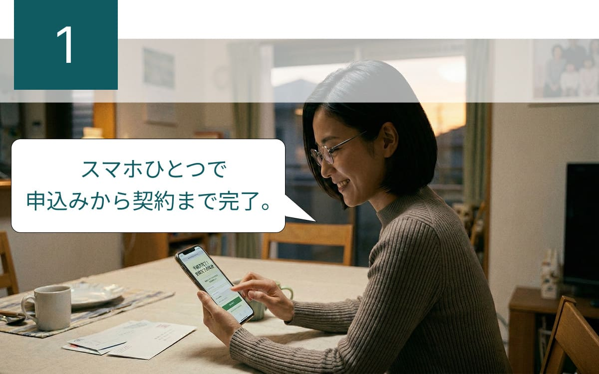
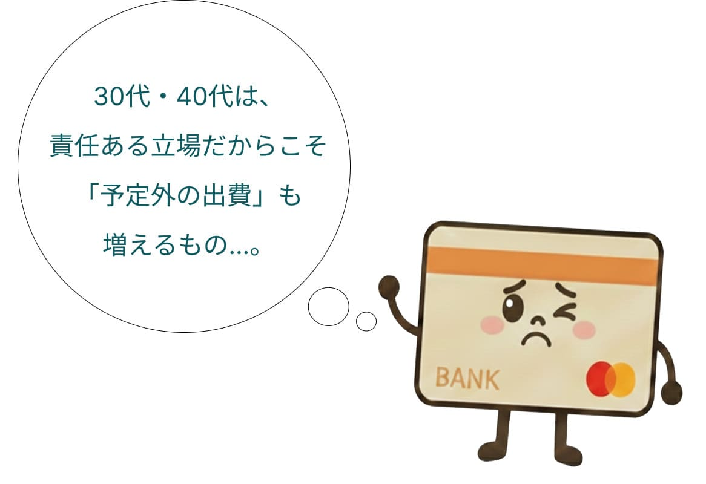
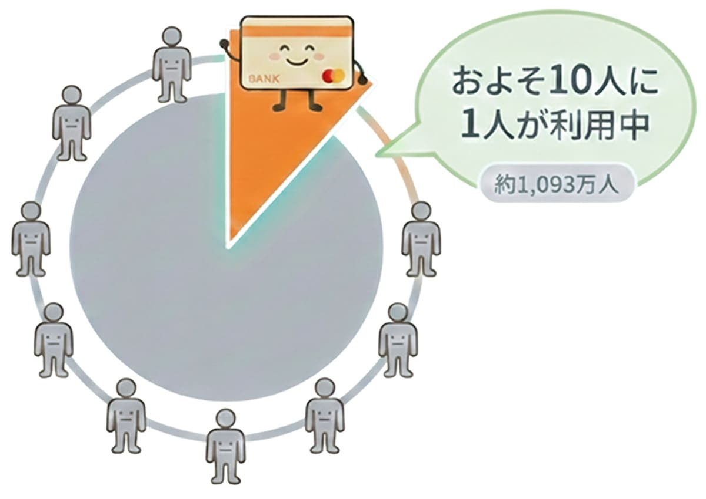
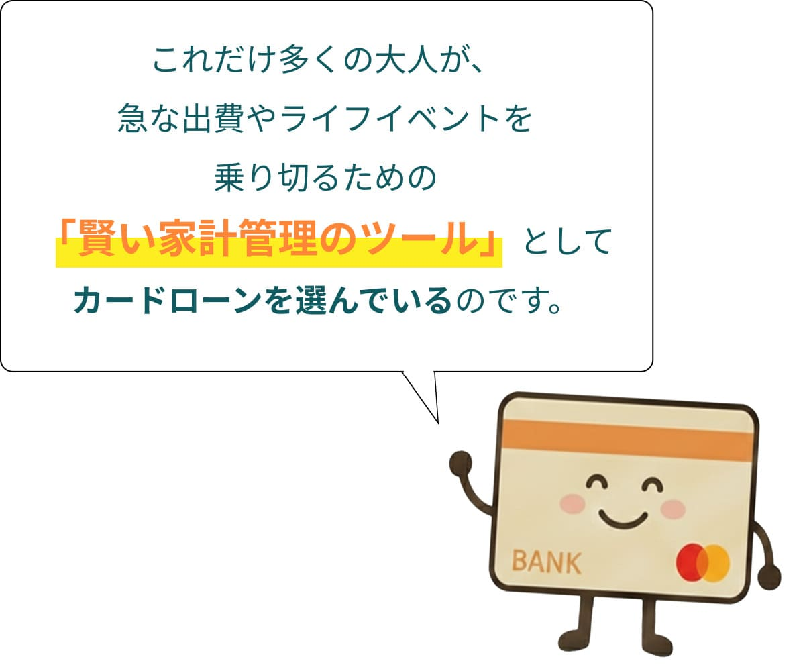
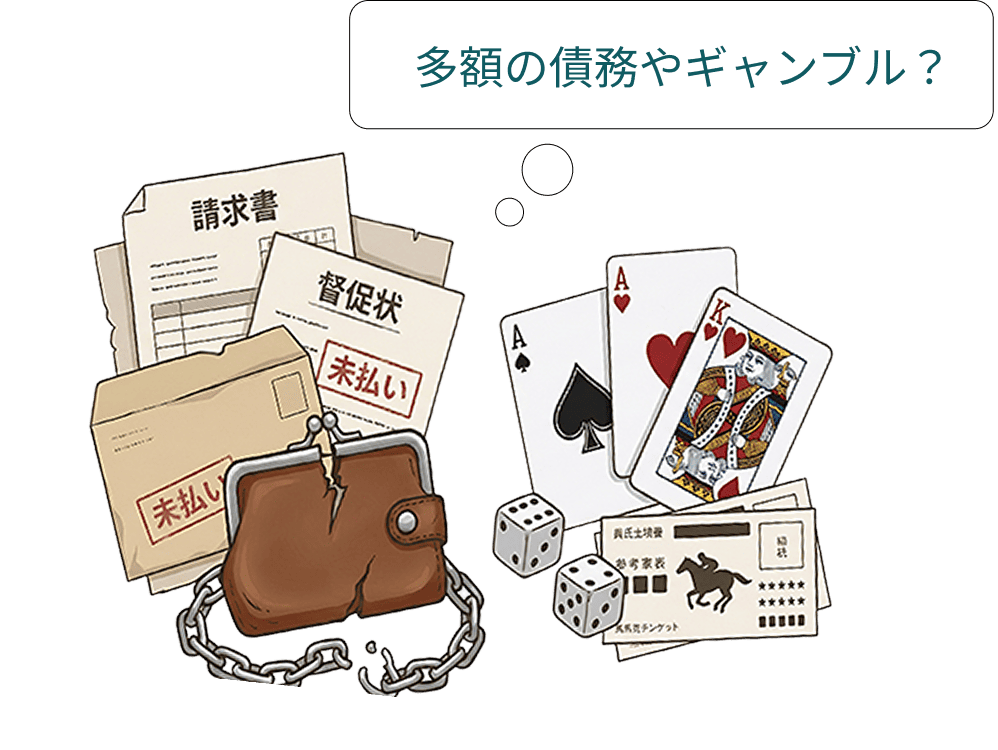
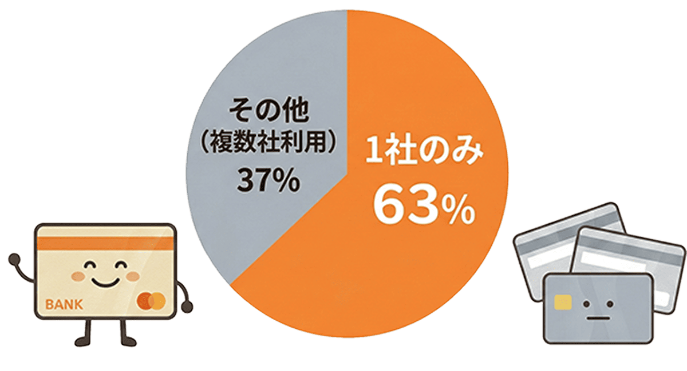
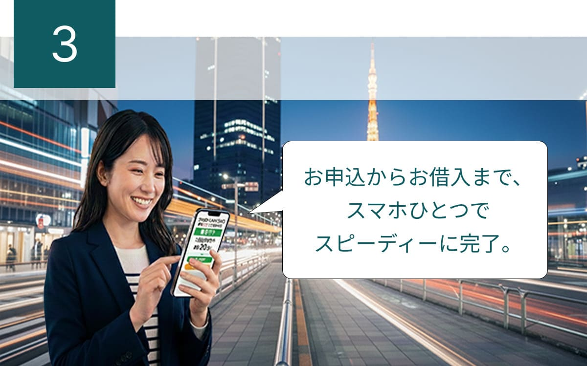
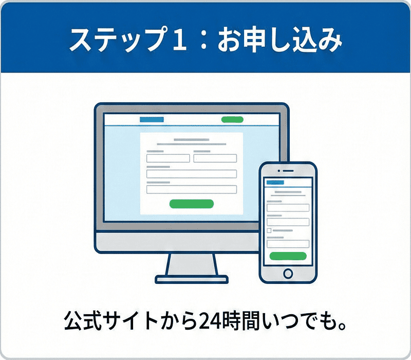
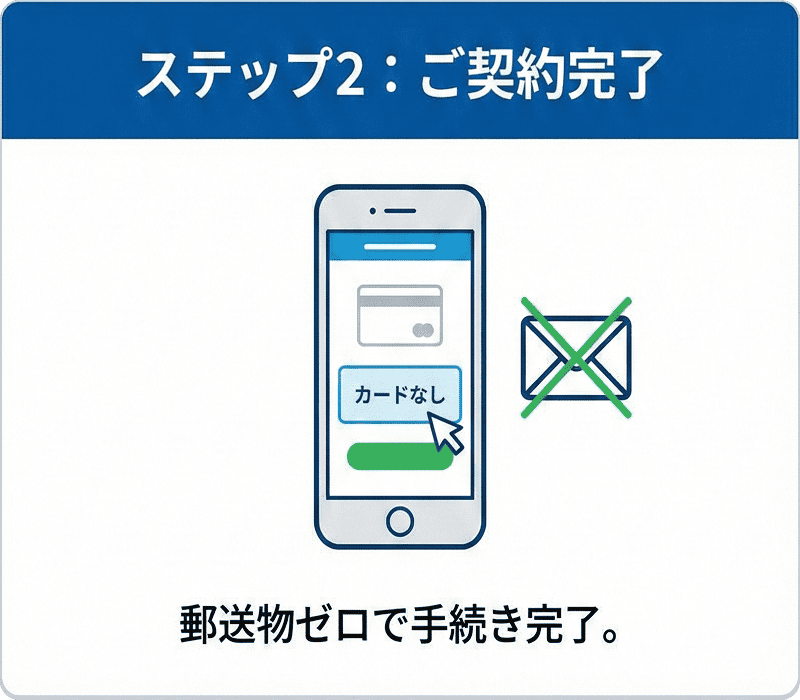
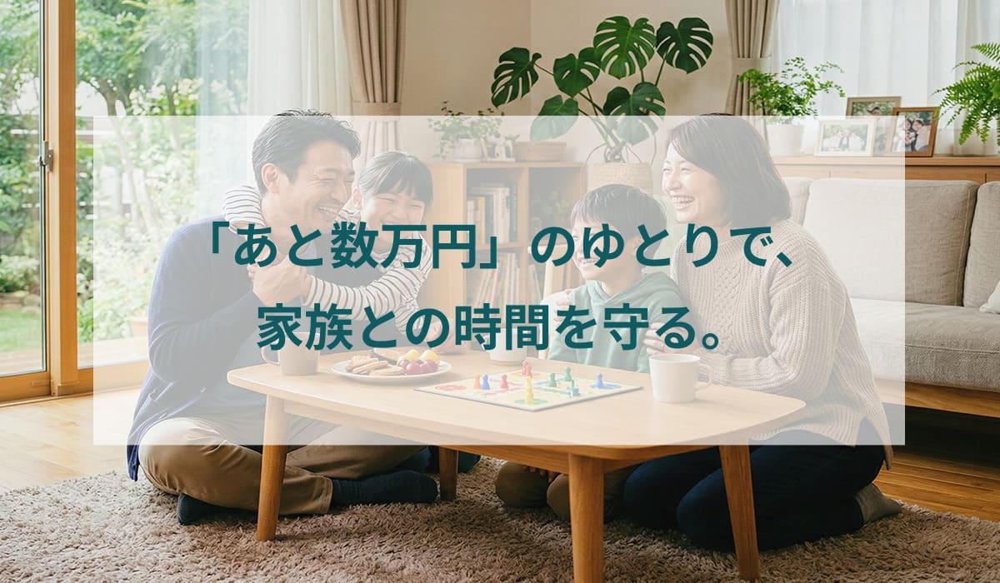

家族に内緒で手続きできる「WEB完結」

契約時に「カードを発行しない」を選べば、
自宅への郵送物※1も一切ありません。
[PR] 本ページはプロモーションを含みます

実は、
成人の「10人に1人」が
利用しています。
と..........後ろめたさを感じる
必要はありません。
最新のデータによると、
現在カードローンを利用している人は、
全国に
約1,093万人。
日本の成人の
およそ10人に1人が、
今まさにこのサービスを活用しています。



そんなイメージは、
もう古いかもしれません。
データを見ると、
利用目的の多くは「日々の暮らし」を
支えるものに集中しています。
趣味・レジャー・娯楽費用
(36.5%)
食費
(22.1%)
衣料品・身の回り品の購入費
(18.3%)
住居費（家賃・ローン等）
(14.7%)
光熱水費の支払い
(14.3%)
さらに、
利用者の約63%は
「1社のみ」の利用に留めており、
自分の管理できる範囲で
計画的に活用される方がほとんどです。

最短20分で解決！
多くの人が活用しているとはいえ、

契約時に「カードを発行しない」を選べば、
自宅への郵送物※1も一切ありません。
アコムなら原則、
勤務先への在籍確認のお電話※2はありません。

急な出費にもすぐに対応可能です。※3
次の給料日でサッと返せば、
余計なコストをかけずにピンチを切り抜けられます。
たったの2ステップで借入完了


（最短20分※3）

審査に通るか不安な方も、
「3秒スピード診断」なら
借入可能かすぐわかります。
本日中にお借り入れを希望される方は、
✔ 今すぐチェックを！